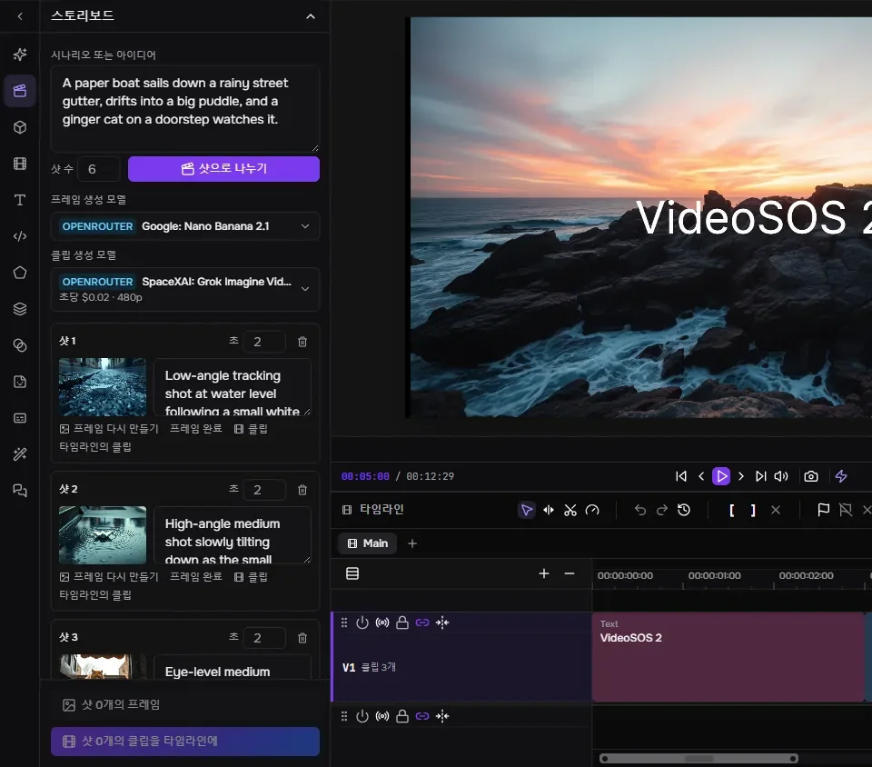
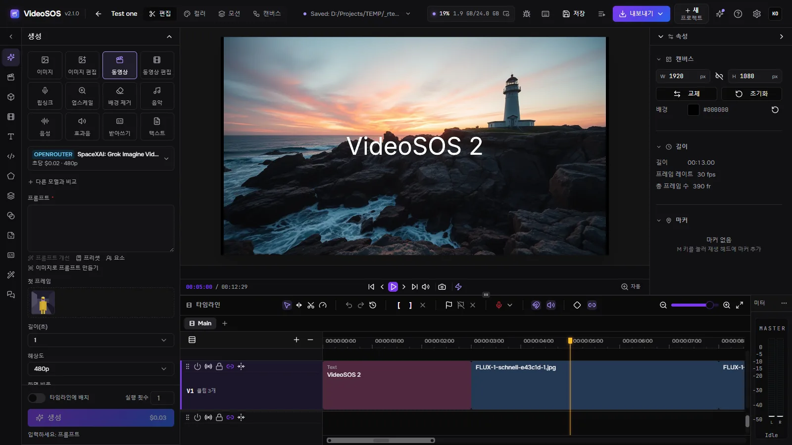
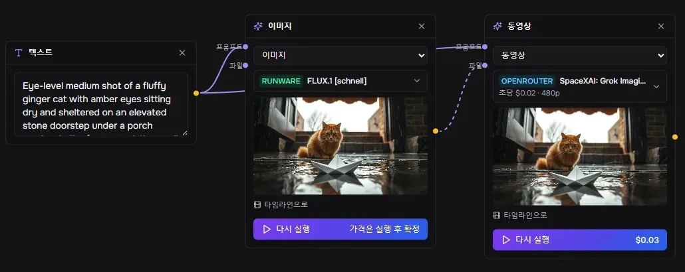
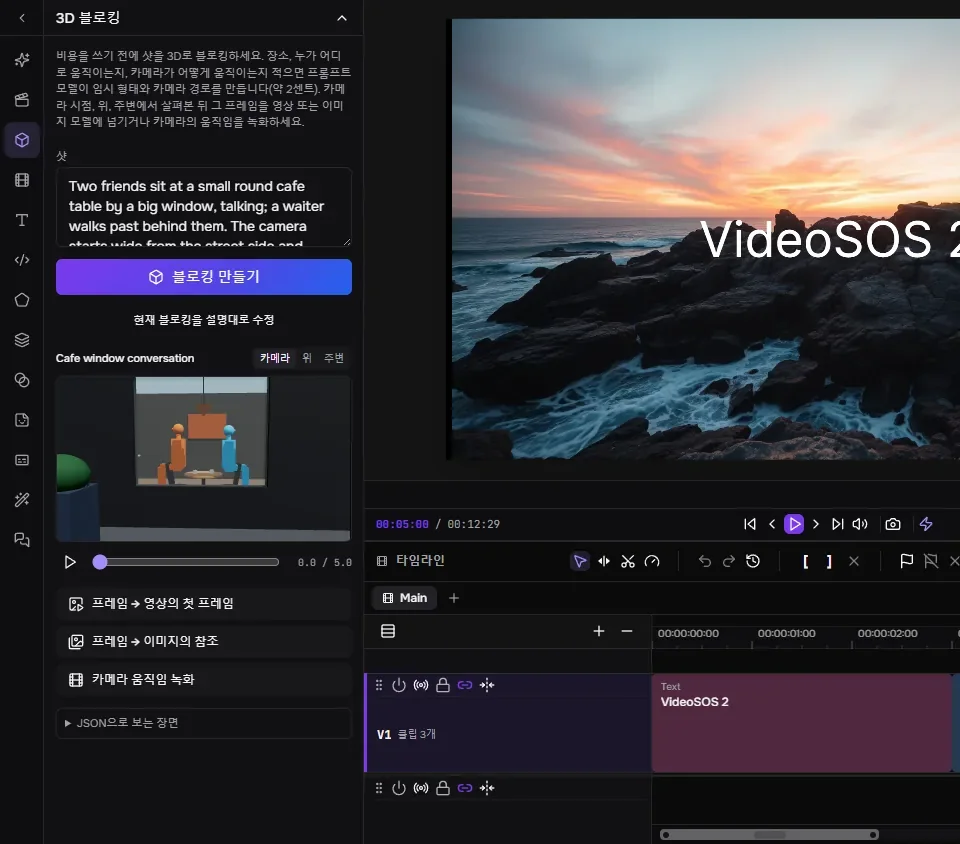
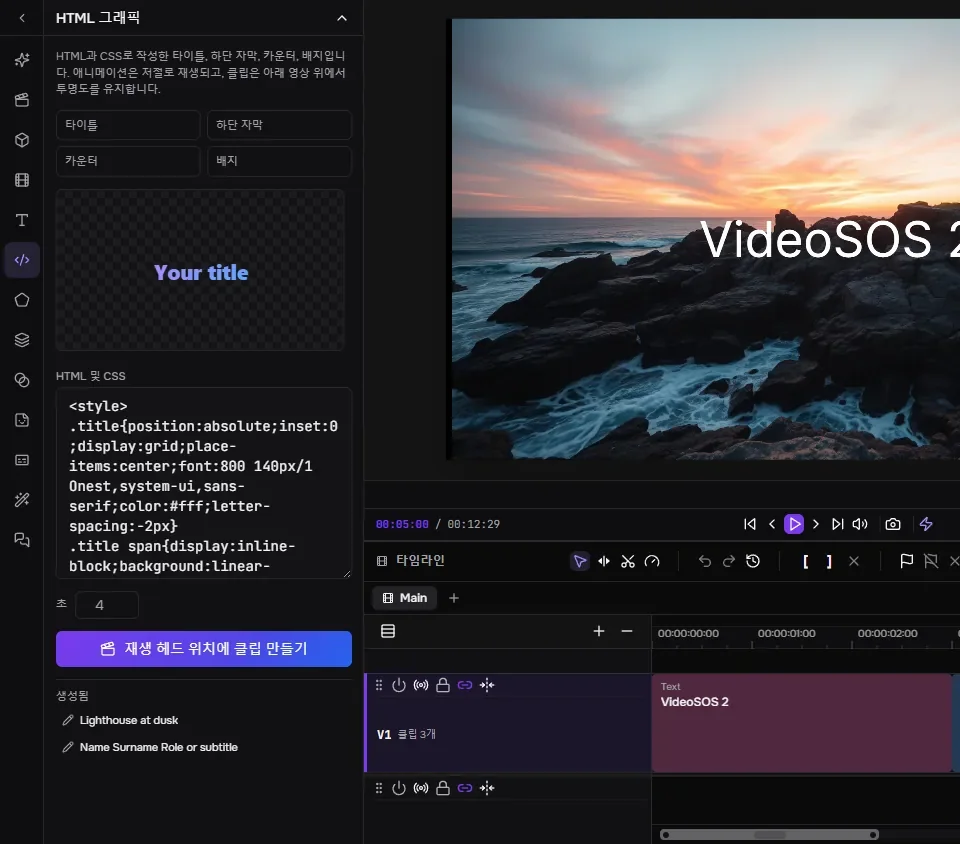
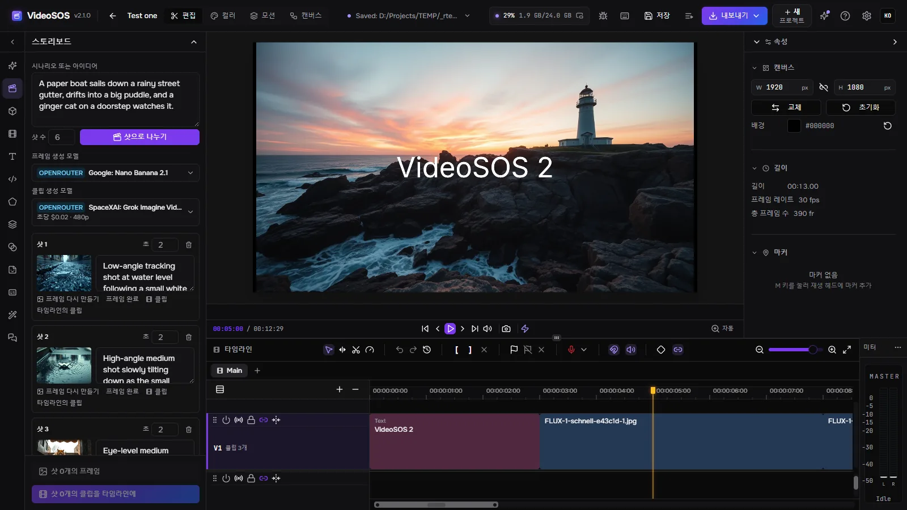
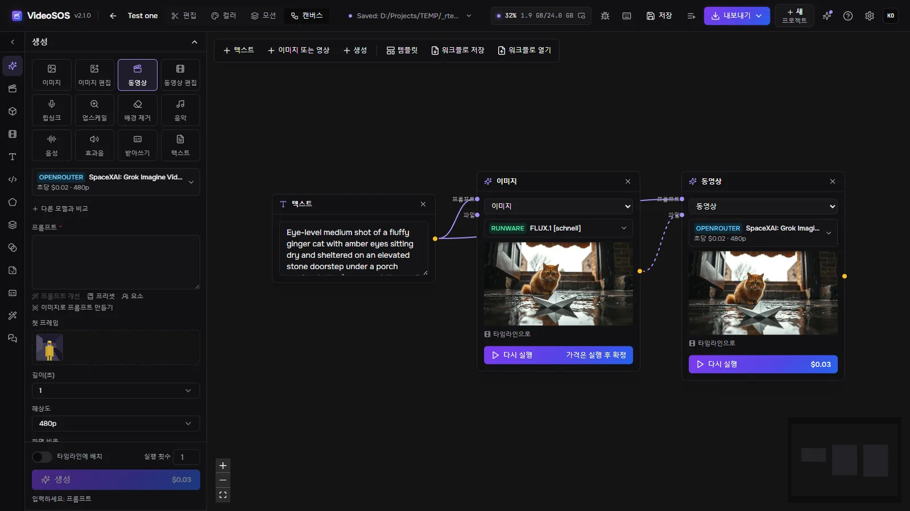
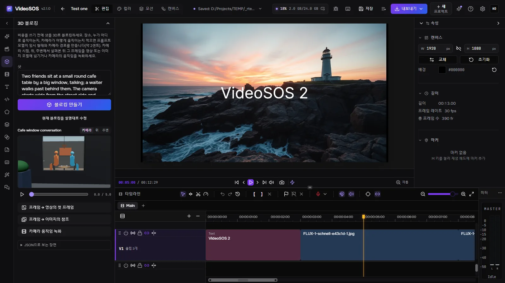
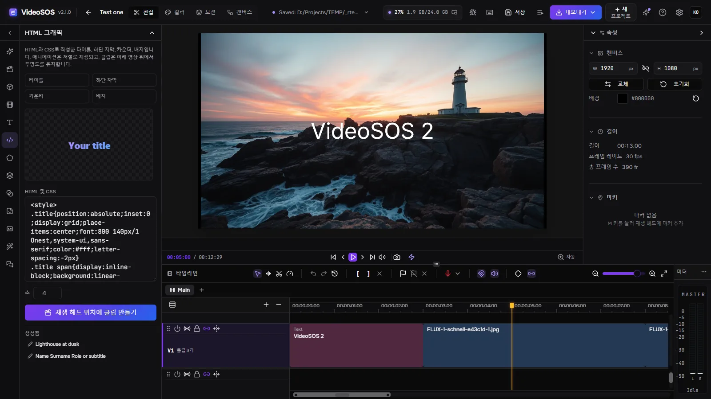

스토리보드

언어 모델이 대본을 샷으로 나눕니다.
VideoSOS는 OpenRouter, fal, Runware의 최고 이미지·영상·음악·음성 모델을 본격적인 멀티트랙 편집기 옆에 놓았습니다. 스토리보드, 노드 캔버스, 3D 블로킹으로 영화를 기획하고, 실행 전에 표시되는 가격으로 내 키를 사용해 모든 샷을 생성한 뒤 완성된 영상으로 편집하세요. AI 에이전트와 함께 할 수도 있습니다.
Windows 10/11, Linux(실험적), Apple Silicon의 macOS(실험적)를 지원합니다. 미리보기와 내보내기에는 WebGPU를 지원하는 그래픽 카드가 필요합니다. 생성에는 OpenRouter, fal 또는 Runware의 키가 필요하며, 요금은 해당 업체에 직접 지불합니다. 이미지와 소리가 있는 영상은 내 그래픽 카드에서 무료로 만들 수도 있습니다(Windows).

생성, 기획, 편집을 하나의 프로그램에서, 파일은 내 디스크에 그대로.

언어 모델이 대본을 샷으로 나눕니다.

텍스트, 이미지, 영상, 생성 작업이 노드가 되어 서로 전달하는 내용으로 연결됩니다.

샷을 설명하면 언어 모델이 대역 도형, 서 있거나 앉아 있는 인물, 그 움직임, 카메라 경로로 샷을 구성합니다.

HTML과 CSS로 만든 제목, 로어서드, 카운터, 배지를 실시간으로 미리 보고, 투명도가 있는 클립으로 만들어 재생 헤드 위치의 영상 위에 올립니다.
열두 가지 작업: 이미지, 편집, 텍스트 또는 프레임에서 영상 만들기, 영상 편집, 립싱크, 업스케일, 배경 제거, 음악, 음성, 효과음, 받아쓰기, 텍스트 — OpenRouter, fal, Runware의 1,000개가 넘는 모델을 제공업체에서 실시간으로 불러옵니다.
양식은 모델 자체의 설명으로 만들어지고, “생성”을 누르기 전에 그에 따라 가격이 계산됩니다. 실행 후에는 제공업체의 실제 청구액이 기록됩니다. 일일 한도가 에이전트를 제어합니다.
같은 프롬프트가 최대 두 개의 다른 모델에도 전송되고, 결과가 가격과 함께 나란히 표시됩니다.
캐릭터, 사물, 장소를 이미지와 함께 이름으로 저장합니다. 프롬프트에 @이름을 쓰면 모델로 전달되어 샷이 바뀌어도 같은 얼굴이 나옵니다.
실행 중인 작업은 결과가 놓일 타임라인 위치에 표시됩니다. 클립의 일부를 그 자리에서 다시 생성할 수 있고, 다음 클립은 이전 클립의 마지막 프레임에서 이어집니다.
여러 비디오·오디오 트랙, 리플·롤링·슬립·슬라이드 트림, 전환 효과, 베지어 그래프 키프레임, 마스크, 블렌드 모드, 스코프가 있는 컬러 그레이딩, 텍스트, 도형, 자막. 그래픽 카드에서 MP4, WebM, MOV, MKV로 빠르게 내보내거나, Final Cut, DaVinci Resolve, Premiere용 FCPXML로 내보냅니다.
Claude Code, Claude Desktop, Cursor, Codex를 연결하면 에이전트가 창에서 하는 일을 그대로 합니다. 모델 선택, 가격 추정, 생성, 타임라인 단계별 편집, 3D 샷 블로킹, 그래픽 제작, 내보내기. 에이전트가 편집하기 전에 타임라인이 매번 보관되고, 편집을 먼저 시험해 볼 수 있으며, 매 편집을 직접 수락하도록 요청할 수도 있습니다.
내가 고른 OpenRouter 모델이 같은 도구로 프로그램을 단계별로 조작하며, 각 단계의 비용과 “중지” 버튼이 표시됩니다.
YouTube 링크, yt-dlp가 지원하는 모든 사이트, 또는 파일 직접 링크를 라이브러리에 가져오며, 진행률 표시, 취소, 이어받기를 지원합니다.
우리 계정은 없습니다. 제공업체에 직접 요금을 지불합니다. 프로젝트와 생성물은 디스크의 일반 파일이며, 작업은 전송 전에 저장되어 두 번 결제되지 않고, 결과는 제공업체의 링크가 만료되기 전에 다운로드됩니다.
영어, 러시아어, 독일어, 스페인어, 프랑스어, 일본어, 한국어, 브라질 포르투갈어, 튀르키예어, 중국어 — 효과와 그 매개변수도 포함됩니다.
제공업체 및 다운로드용 프록시와 네트워크 접속을 지원합니다. 다른 컴퓨터나 휴대폰의 브라우저에서 접속 키로 같은 인터페이스를 열 수 있으며, 모든 작업은 이곳에서 실행됩니다.
이미지는 Qwen-Image 2.1, 소리가 있는 영상은 MiniMax-H3와 LTX-2.5가 stable-diffusion.cpp(CUDA, Vulkan 또는 프로세서)로 이 컴퓨터에서 실행됩니다. 양자화된 가중치와 가속 프리셋을 쓰며 키도 요금도 없습니다. 작성자의 다른 프로그램에 이미 있는 파일은 내려받지 않고 거기서 가져옵니다.
YuE2 Studio, MiniMax Music3 Studio, ACE-Step Studio가 열려 있으면 「음악」에 자체 양식으로 나타납니다. 곡은 스튜디오가 만들고 파일은 라이브러리에 들어갑니다.
프로그램 그대로, 내 언어로.




네. VideoSOS는 무료 오픈 소스(MIT)입니다. 생성 비용은 내 키로 제공업체에 지불하며, 편집과 내보내기는 무료입니다.
저희 쪽에는 필요 없습니다. OpenRouter, fal, Runware 중 적어도 한 곳의 키가 필요하고, 그 제공업체에 직접 요금을 지불합니다. VideoSOS는 사용자의 돈을 보지 않으며 키를 에이전트에 보여 주지도 않습니다.
모델에 따라 다릅니다. 생성 양식은 실행할 때마다 먼저 가격을 보여 주며, 빠른 이미지는 1센트 미만부터 긴 영상은 몇 달러까지 다양합니다. 기록에는 각 실행의 비용이 남습니다. 스토리보드에서는 유료 클립 전에 저렴한 프레임을 먼저 승인합니다.
생성에 필요한 것만 선택한 제공업체로 전송됩니다. 프로젝트, 미디어, 결과물은 내 디스크에 그대로 남습니다. 익명 통계는 직접 켜기 전에는 꺼져 있으며, 프롬프트, 파일, 키는 포함되지 않습니다.
Windows 10 및 11 x64, 그리고 실험적 빌드로 Linux x86-64와 Apple Silicon의 macOS를 지원합니다. WebGPU를 지원하는 그래픽 카드로 미리보기와 내보내기를 실행합니다.
Claude Code, Claude Desktop, Cursor, Codex를 연결하면 에이전트가 창에서 하는 일을 그대로 합니다. 모델 선택, 가격 추정, 생성, 타임라인 단계별 편집, 3D 샷 블로킹, 그래픽 제작, 내보내기. 에이전트가 편집하기 전에 타임라인이 매번 보관되고, 편집을 먼저 시험해 볼 수 있으며, 매 편집을 직접 수락하도록 요청할 수도 있습니다.
claude mcp add --transport http videosos http://127.0.0.1:8796/mcp
Tauri 셸이 같은 프로세스에서 Rust 서버를 실행합니다. 창은 FreeCut 편집기의 포크이며 생성 패널, 스토리보드, 캔버스, 3D 블로킹, 에이전트 브리지가 추가되어 있습니다. 작업은 SQLite에, 파일은 내 디스크에 저장됩니다.
React window (FreeCut fork) ─┐
├─ VideoSOS.exe (Tauri shell + Rust/axum server inside)
Rust axum server ────────────┘ │
├─ OpenRouter · fal · Runware (your keys)
└─ MCP http://127.0.0.1:8796/mcp